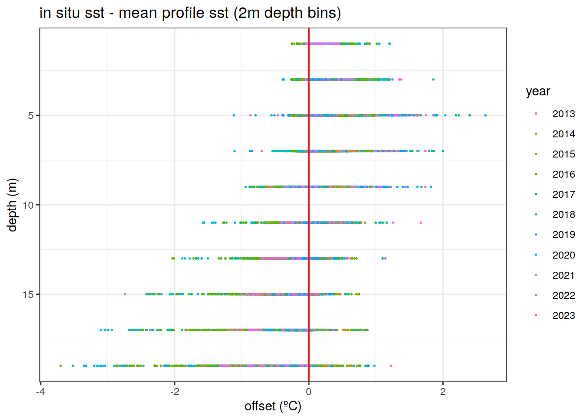
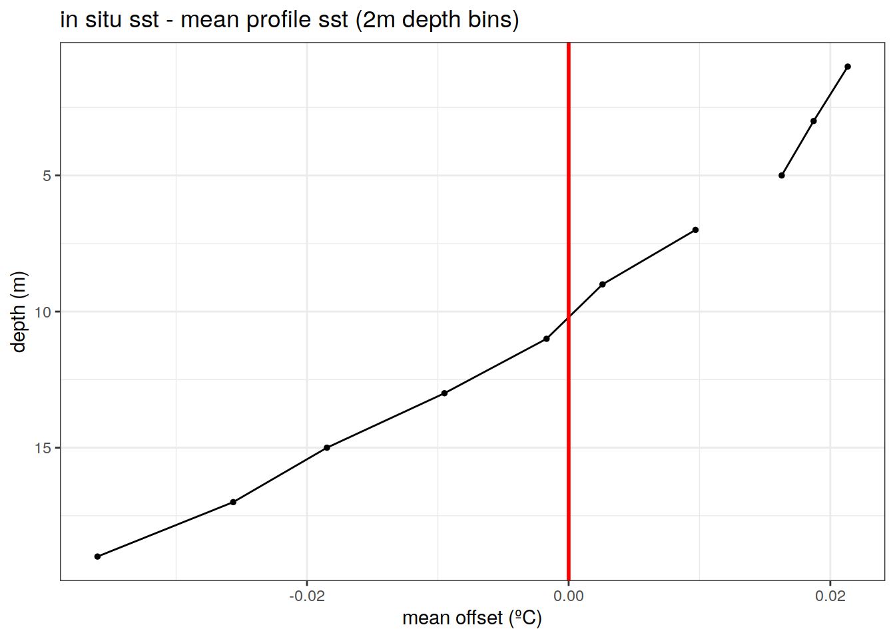
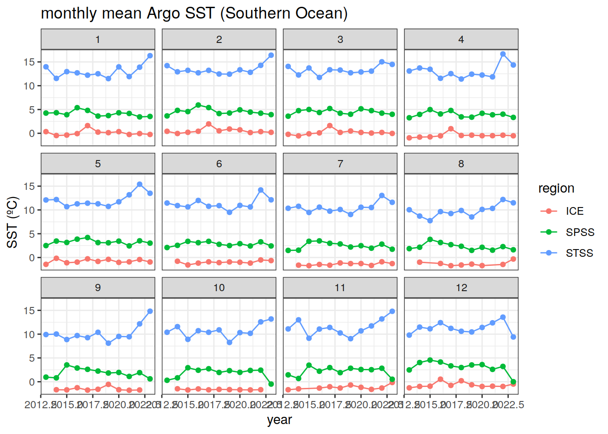
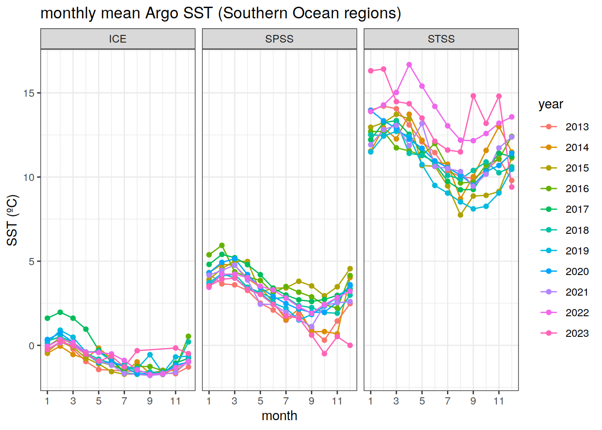

BGC-Argo Temperature Data
Pasqualina Vonlanthen, David Stappard & Jens Daniel Müller
13 December, 2023
Last updated: 2023-12-13
Checks: 7 0
Knit directory: bgc_argo_r_argodata/
This reproducible R Markdown analysis was created with workflowr (version 1.7.0). The Checks tab describes the reproducibility checks that were applied when the results were created. The Past versions tab lists the development history.
Great! Since the R Markdown file has been committed to the Git repository, you know the exact version of the code that produced these results.
Great job! The global environment was empty. Objects defined in the global environment can affect the analysis in your R Markdown file in unknown ways. For reproduciblity it’s best to always run the code in an empty environment.
The command set.seed(20211008) was run prior to running
the code in the R Markdown file. Setting a seed ensures that any results
that rely on randomness, e.g. subsampling or permutations, are
reproducible.
Great job! Recording the operating system, R version, and package versions is critical for reproducibility.
Nice! There were no cached chunks for this analysis, so you can be confident that you successfully produced the results during this run.
Great job! Using relative paths to the files within your workflowr project makes it easier to run your code on other machines.
Great! You are using Git for version control. Tracking code development and connecting the code version to the results is critical for reproducibility.
The results in this page were generated with repository version 4844d30. See the Past versions tab to see a history of the changes made to the R Markdown and HTML files.
Note that you need to be careful to ensure that all relevant files for
the analysis have been committed to Git prior to generating the results
(you can use wflow_publish or
wflow_git_commit). workflowr only checks the R Markdown
file, but you know if there are other scripts or data files that it
depends on. Below is the status of the Git repository when the results
were generated:
Ignored files:
Ignored: .Rhistory
Ignored: .Rproj.user/
Ignored: output/
Untracked files:
Untracked: code/load_clim_nitrate_woa.Rmd
Untracked: code/nitrate_align_climatology.Rmd
Unstaged changes:
Modified: code/load_clim_doxy_woa.Rmd
Note that any generated files, e.g. HTML, png, CSS, etc., are not included in this status report because it is ok for generated content to have uncommitted changes.
These are the previous versions of the repository in which changes were
made to the R Markdown (analysis/argo_temp.Rmd) and HTML
(docs/argo_temp.html) files. If you’ve configured a remote
Git repository (see ?wflow_git_remote), click on the
hyperlinks in the table below to view the files as they were in that
past version.
| File | Version | Author | Date | Message |
|---|---|---|---|---|
| Rmd | fa9795c | ds2n19 | 2023-12-12 | dependencies listed are start of markdown files. |
| html | e60ebd2 | ds2n19 | 2023-12-07 | Build site. |
| html | cec2a2a | ds2n19 | 2023-11-24 | Build site. |
| Rmd | 59f5cc4 | ds2n19 | 2023-11-23 | Moved spatiotemporal analysis to use aligned profiles. |
| html | 80c16c2 | ds2n19 | 2023-11-15 | Build site. |
| Rmd | 1ae81b3 | ds2n19 | 2023-10-11 | reworked core load process to work initially by year and then finally create consolidated all years files. |
| Rmd | 44f5720 | ds2n19 | 2023-10-09 | manual commit |
| html | 7b3d8c5 | pasqualina-vonlanthendinenna | 2022-08-29 | Build site. |
| html | bdd516d | pasqualina-vonlanthendinenna | 2022-05-23 | Build site. |
| html | 4173c20 | jens-daniel-mueller | 2022-05-12 | Build site. |
| html | dfe89d7 | jens-daniel-mueller | 2022-05-12 | Build site. |
| html | 710edd4 | jens-daniel-mueller | 2022-05-11 | Build site. |
| Rmd | 2f20a76 | jens-daniel-mueller | 2022-05-11 | rebuild all after subsetting AB profiles and code cleaning |
Task
Explore BGC-Argo temperature data through timeseries and monthly climatological maps
Dependencies
temp_bgc_observed.rds - bgc preprocessed folder, created by temp_align_climatology. Not this file is written BEFORE the vertical alignment stage.
path_argo <- '/nfs/kryo/work/updata/bgc_argo_r_argodata'
path_emlr_utilities <- "/nfs/kryo/work/jenmueller/emlr_cant/utilities/files/"
path_basin_mask <- "/nfs/kryo/work/updata/reccap2/"
path_argo_preprocessed <- paste0(path_argo, "/preprocessed_bgc_data")
path_argo <- '/nfs/kryo/work/datasets/ungridded/3d/ocean/floats/bgc_argo'
# /nfs/kryo/work/datasets/ungridded/3d/ocean/floats/bgc_argo/preprocessed_bgc_data
path_argo_preprocessed <- paste0(path_argo, "/preprocessed_bgc_data")Load BGC-SST data
Using only temperature data from profiles that have been validated qc = 1 and no gaps.
# read validated temperature profile and restrict to the top 20 m
sst <- read_rds(file = paste0(path_argo_preprocessed, "/temp_bgc_observed.rds")) %>%
filter(between(depth, 0, 20))
# load in biome separations
nm_biomes <- read_rds(file = paste0(path_argo_preprocessed, "/nm_biomes.rds"))Southern Ocean SST
sst_SO <- sst %>%
filter(lat <= -30)SST offset with depth
Difference between the in-situ measured sst (20 m) and the profile-mean 20m temperature
# calculate the mean sst for each surface profile
mean_profile_sst <- sst_SO %>%
group_by(file_id) %>%
mutate(mean_prof_sst = mean(temp_adjusted, na.rm = TRUE),
.before = depth) %>%
ungroup() %>%
mutate(offset = temp_adjusted-mean_prof_sst,
.after = mean_prof_sst) # subtract the mean profile sst from the measured in situ sst
mean_profile_sst %>%
ggplot()+
geom_point(aes(x = offset, y = depth, col = as.character(year)), size = 0.3, pch = 19) +
scale_y_reverse()+
geom_vline(xintercept = 0, col = 'red', size = 0.6)+
labs(x = 'offset (ºC)',
y = 'depth (m)',
col = 'year',
title = 'in situ sst - mean profile sst')
Bin the sst data into 2m-depth intervals and calculate the offset for each sst observation in each depth interval relative to the profile-mean sst
# bin the sst values into 2m bins and calculate the offset for each 2m bin
mean_profile_sst_binned <- sst_SO %>%
mutate(depth = cut(depth, seq(0, 20, 2), seq(1, 19, 2)),
depth = as.numeric(as.character(depth))) %>%
group_by(file_id) %>%
mutate(mean_prof_sst = mean(temp_adjusted, na.rm = TRUE),
.before = depth) %>%
ungroup() %>%
mutate(offset = temp_adjusted-mean_prof_sst,
.after = mean_prof_sst)
# plot the offset of the depth-binned values
mean_profile_sst_binned %>%
ggplot()+
geom_point(aes(x = offset, y = depth, col = as.character(year)), size = 0.3, pch = 19) +
scale_y_reverse()+
geom_vline(xintercept = 0, col = 'red', size = 0.6)+
labs(x = 'offset (ºC)',
y = 'depth (m)',
col = 'year',
title = 'in situ sst - mean profile sst (2m depth bins)')
Mean binned offset
# bin the ph values into 2m bins and calculate the offset for each 2m bin
profile_sst_binned_ave <- sst_SO %>%
mutate(depth = cut(depth, seq(0, 20, 2), seq(1, 19, 2)),
depth = as.numeric(as.character(depth))) %>%
group_by(file_id) %>%
mutate(mean_prof_sst = mean(temp_adjusted, na.rm = TRUE),
.before = depth) %>%
ungroup() %>%
mutate(offset = temp_adjusted-mean_prof_sst,
.after = mean_prof_sst) %>%
group_by(depth) %>%
summarise(mean_offset = mean(offset))
# plot the offset of the depth-binned values
profile_sst_binned_ave %>%
ggplot()+
geom_point(aes(x = mean_offset, y = depth), size = 1, pch = 19) +
geom_line(aes(x = mean_offset, y = depth))+
scale_y_reverse()+
geom_vline(xintercept = 0, col = 'red', size = 1)+
labs(x = 'mean offset (ºC)',
y = 'depth (m)',
col = 'year',
title = 'in situ sst - mean profile sst (2m depth bins)')
Monthly climatological sst
Map of monthly climatological Argo temperature (BGC floats, flag A pH profiles only)
# average pH values in the top 20 m for each month in each 2 x 2º longitude/latitude grid
sst_clim_SO <- sst_SO %>%
group_by(lat, lon, month) %>%
summarise(sst_clim_month = mean(temp_adjusted))
# read in the map from updata
map <-
read_rds(paste(path_emlr_utilities,
"map_landmask_WOA18.rds",
sep = ""))
# map a monthly climatology of pH
map +
geom_tile(data = sst_clim_SO,
aes(lon, lat, fill = sst_clim_month)) +
lims(y = c(-85, -25)) +
scale_fill_viridis_c() +
labs(x = 'lon',
y = 'lat',
fill = 'SST',
title = 'Monthly climatological \nArgo SST') +
theme(legend.position = 'right') +
facet_wrap(~month, ncol = 2)
basemap(limits = -32, data = sst_clim_SO) + # change to polar projection
geom_spatial_tile(data = sst_clim_SO,
aes(x = lon,
y = lat,
fill = sst_clim_month),
linejoin = 'mitre',
col = 'transparent',
detail = 60)+
scale_fill_viridis_c()+
theme(legend.position = 'bottom')+
labs(x = 'lon',
y = 'lat',
fill = 'SST',
title = 'monthly climatological \nArgo SST')+
facet_wrap(~month, ncol = 2)Monthly timeseries
Timeseries of monthly SST values, for each Mayot biome
# plot the region separations on a map
map +
geom_raster(data = nm_biomes,
aes(x = lon,
y = lat,
fill = biome_name)) +
labs(title = 'Southern Ocean Mayot biomes',
fill = 'biome')
| Version | Author | Date |
|---|---|---|
| 710edd4 | jens-daniel-mueller | 2022-05-11 |
# plot a timeseries of monthly values over the whole southern ocean south of 30ºS
sst_SO <- inner_join(sst_SO, nm_biomes)
sst_month_SO <- sst_SO %>%
group_by(year, month, biome_name) %>%
summarise(sst_ave = mean(temp_adjusted, na.rm = TRUE))
# timeseries of monthly pH values over 2014-2021 (separate panels for each month)
sst_month_SO %>%
ggplot(aes(x = year,
y = sst_ave,
group = biome_name,
col = biome_name)) +
facet_wrap(~month) +
geom_line() +
geom_point() +
labs(x = 'year',
y = 'SST (ºC)',
title = 'monthly mean Argo SST (Southern Ocean)',
col = 'region')
Monthly average Southern Ocean SST, for each biome
# timeseries of monthly sst values for each year (separate years on the same plot)
sst_month_SO %>%
# filter(year != 2014) %>% # remove the year that is missing data
ggplot(aes(x = month,
y = sst_ave,
group = year,
col = as.character(year)))+
geom_line()+
geom_point()+
scale_x_continuous(breaks = seq(1, 12, 2))+
facet_wrap(~biome_name)+
labs(x = 'month',
y = 'SST (ºC)',
title = 'monthly mean Argo SST (Southern Ocean regions)',
col = 'year')
# calculate a yearly average SST (one SST value per year, for the whole biome)
sst_year_SO <- sst_SO %>%
group_by(year, biome_name) %>%
summarise(sst_ave = mean(temp_adjusted, na.rm = TRUE))
# plot a timeseries of the yearly average SST value (one value per year)
sst_year_SO %>%
ggplot(aes(x = year, y = sst_ave, group = biome_name, col = biome_name))+
geom_line()+
geom_point()+
labs(x = 'year',
y = 'SST (ºC)',
title = 'yearly mean Argo SST (south of 30ºS)',
col = 'region')
sessionInfo()R version 4.2.2 (2022-10-31)
Platform: x86_64-pc-linux-gnu (64-bit)
Running under: openSUSE Leap 15.5
Matrix products: default
BLAS: /usr/local/R-4.2.2/lib64/R/lib/libRblas.so
LAPACK: /usr/local/R-4.2.2/lib64/R/lib/libRlapack.so
locale:
[1] LC_CTYPE=en_US.UTF-8 LC_NUMERIC=C
[3] LC_TIME=en_US.UTF-8 LC_COLLATE=en_US.UTF-8
[5] LC_MONETARY=en_US.UTF-8 LC_MESSAGES=en_US.UTF-8
[7] LC_PAPER=en_US.UTF-8 LC_NAME=C
[9] LC_ADDRESS=C LC_TELEPHONE=C
[11] LC_MEASUREMENT=en_US.UTF-8 LC_IDENTIFICATION=C
attached base packages:
[1] stats graphics grDevices utils datasets methods base
other attached packages:
[1] ggOceanMaps_1.3.4 ggspatial_1.1.7 oce_1.7-10 gsw_1.1-1
[5] lubridate_1.9.0 timechange_0.1.1 forcats_0.5.2 stringr_1.5.0
[9] dplyr_1.1.3 purrr_1.0.2 readr_2.1.3 tidyr_1.3.0
[13] tibble_3.2.1 ggplot2_3.4.4 tidyverse_1.3.2
loaded via a namespace (and not attached):
[1] fs_1.5.2 sf_1.0-9 httr_1.4.4
[4] rprojroot_2.0.3 tools_4.2.2 backports_1.4.1
[7] bslib_0.4.1 utf8_1.2.2 R6_2.5.1
[10] KernSmooth_2.23-20 rgeos_0.5-9 DBI_1.1.3
[13] colorspace_2.0-3 raster_3.6-11 withr_2.5.0
[16] sp_1.5-1 tidyselect_1.2.0 compiler_4.2.2
[19] git2r_0.30.1 cli_3.6.1 rvest_1.0.3
[22] xml2_1.3.3 labeling_0.4.2 sass_0.4.4
[25] scales_1.2.1 classInt_0.4-8 proxy_0.4-27
[28] digest_0.6.30 rmarkdown_2.18 pkgconfig_2.0.3
[31] htmltools_0.5.3 highr_0.9 dbplyr_2.2.1
[34] fastmap_1.1.0 rlang_1.1.1 readxl_1.4.1
[37] rstudioapi_0.15.0 farver_2.1.1 jquerylib_0.1.4
[40] generics_0.1.3 jsonlite_1.8.3 googlesheets4_1.0.1
[43] magrittr_2.0.3 Rcpp_1.0.10 munsell_0.5.0
[46] fansi_1.0.3 lifecycle_1.0.3 terra_1.7-39
[49] stringi_1.7.8 whisker_0.4 yaml_2.3.6
[52] grid_4.2.2 parallel_4.2.2 promises_1.2.0.1
[55] crayon_1.5.2 lattice_0.20-45 haven_2.5.1
[58] hms_1.1.2 knitr_1.41 pillar_1.9.0
[61] codetools_0.2-18 reprex_2.0.2 glue_1.6.2
[64] evaluate_0.18 modelr_0.1.10 vctrs_0.6.4
[67] tzdb_0.3.0 httpuv_1.6.6 cellranger_1.1.0
[70] gtable_0.3.1 assertthat_0.2.1 cachem_1.0.6
[73] xfun_0.35 broom_1.0.5 e1071_1.7-12
[76] later_1.3.0 viridisLite_0.4.1 class_7.3-20
[79] googledrive_2.0.0 gargle_1.2.1 workflowr_1.7.0
[82] units_0.8-0 ellipsis_0.3.2